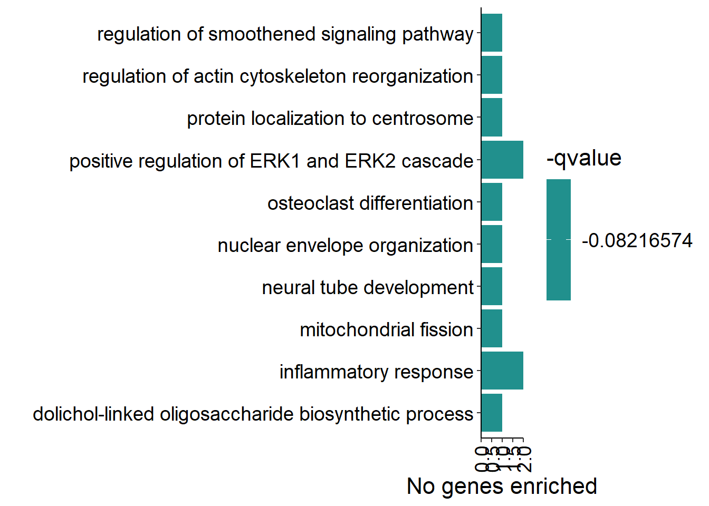
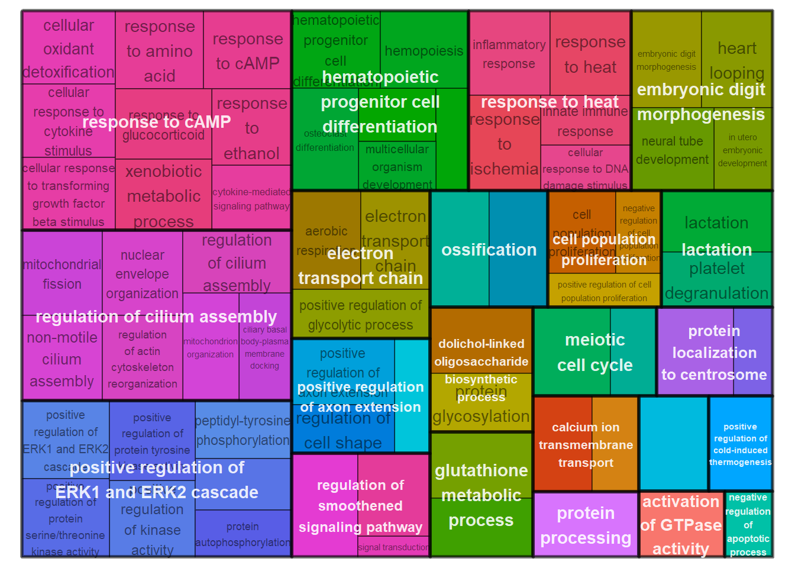

Volcano Plots and Overlap Analyses
For manuscript: Neurogenomic landscape of male cooperative behavior in a wild bird
Peri Bolton
Last Knit “2022-02-04”
This code is summarizing the results from the DESeq2 within tissues experiment, and calculating genes that have similar expression patterns across tissue types. The document is broken up by interest variable, as the data read in for the volcano plots forms a scaffold for the rest.
2 Mean testosterone phenotype
2.1 Volcano Plots


2.2 Pairwise Tissue Similarity

FALSE Creating a temporary cluster...done:
FALSE socket cluster with 7 nodes on host 'localhost'
FALSE Multiscale bootstrap... Done.
2.3 RRHO2
This approach uses package ‘RRHO2’ and compares rank ordered gene lists against each-other and uses a hypergeometric test to compare the similarity of gene names in shorter segments along the length gene list.

To view pdf versions of the p-value scaled (featured here), and raw unscaled data please visit the main branch of the github repository under “DE_results/RRHO2”.
2.4 Overall brain patterns
Here I am taking just the brain tissues and taking the median p-value of each gene in the rank-ordered gene list. This will give an idea for similar gene expression patterns across the entire brain.

| ID | Description | GeneRatio | BgRatio | pvalue | p.adjust | qvalue | geneID | Count |
|---|---|---|---|---|---|---|---|---|
| GO:0006958 | complement activation, classical pathway | 3/49 | 17/11439 | 0.0000482 | 0.0093367 | 0.0079353 | C3/LOC113984271/LOC113992168 | 3 |
| GO:0006805 | xenobiotic metabolic process | 4/49 | 52/11439 | 0.0000692 | 0.0093367 | 0.0079353 | LOC113990605/LOC113990807/LOC113990865/LOC113991532 | 4 |
| GO:0006749 | glutathione metabolic process | 3/49 | 33/11439 | 0.0003682 | 0.0331370 | 0.0281632 | LOC113990605/LOC113990807/LOC113990865 | 3 |
| GO:0006469 | negative regulation of protein kinase activity | 3/49 | 61/11439 | 0.0022328 | 0.0888467 | 0.0755110 | EPHA1/LOC114002160/TESC | 3 |
| GO:0006956 | complement activation | 2/49 | 17/11439 | 0.0023464 | 0.0888467 | 0.0755110 | C3/LOC113992168 | 2 |
| GO:0033628 | regulation of cell adhesion mediated by integrin | 2/49 | 17/11439 | 0.0023464 | 0.0888467 | 0.0755110 | LOC114002160/TESC | 2 |
| GO:0051604 | protein maturation | 2/49 | 17/11439 | 0.0023464 | 0.0888467 | 0.0755110 | LOC114002160/TESC | 2 |
| GO:1901687 | glutathione derivative biosynthetic process | 2/49 | 18/11439 | 0.0026325 | 0.0888467 | 0.0755110 | LOC113990807/LOC113990865 | 2 |
| GO:0007131 | reciprocal meiotic recombination | 2/49 | 23/11439 | 0.0042941 | 0.1288222 | 0.1094863 | RAD51D/SYCE3 | 2 |
| GO:0030449 | regulation of complement activation | 2/49 | 27/11439 | 0.0058928 | 0.1591051 | 0.1352238 | C3/LOC113992168 | 2 |


3 Social network strength (Cooperative tendency)
3.1 Volcanoes


3.2 Pairwise Tissue Similarity

FALSE Creating a temporary cluster...done:
FALSE socket cluster with 7 nodes on host 'localhost'
FALSE Multiscale bootstrap... Done.
3.3 RRHO2
FALSE TableGrob (11 x 11) "arrange": 67 grobs
FALSE z cells name grob
FALSE GON_PIT 1 ( 1- 1, 1- 1) arrange gtable[layout]
FALSE GON_VMH 2 ( 2- 2, 1- 1) arrange gtable[layout]
FALSE GON_AH 3 ( 3- 3, 1- 1) arrange gtable[layout]
FALSE GON_PVN 4 ( 4- 4, 1- 1) arrange gtable[layout]
FALSE GON_POM 5 ( 5- 5, 1- 1) arrange gtable[layout]
FALSE GON_ICO 6 ( 6- 6, 1- 1) arrange gtable[layout]
FALSE GON_GCT 7 ( 7- 7, 1- 1) arrange gtable[layout]
FALSE GON_TNA 8 ( 8- 8, 1- 1) arrange gtable[layout]
FALSE GON_AI 9 ( 9- 9, 1- 1) arrange gtable[layout]
FALSE GON_LS 10 (10-10, 1- 1) arrange gtable[layout]
FALSE GON_BSTm 11 (11-11, 1- 1) arrange gtable[layout]
FALSE PIT_VMH 12 ( 2- 2, 2- 2) arrange gtable[layout]
FALSE PIT_AH 13 ( 3- 3, 2- 2) arrange gtable[layout]
FALSE PIT_PVN 14 ( 4- 4, 2- 2) arrange gtable[layout]
FALSE PIT_POM 15 ( 5- 5, 2- 2) arrange gtable[layout]
FALSE PIT_ICO 16 ( 6- 6, 2- 2) arrange gtable[layout]
FALSE PIT_GCT 17 ( 7- 7, 2- 2) arrange gtable[layout]
FALSE PIT_TNA 18 ( 8- 8, 2- 2) arrange gtable[layout]
FALSE PIT_AI 19 ( 9- 9, 2- 2) arrange gtable[layout]
FALSE PIT_LS 20 (10-10, 2- 2) arrange gtable[layout]
FALSE PIT_BSTm 21 (11-11, 2- 2) arrange gtable[layout]
FALSE VMH_AH 22 ( 3- 3, 3- 3) arrange gtable[layout]
FALSE VMH_PVN 23 ( 4- 4, 3- 3) arrange gtable[layout]
FALSE VMH_POM 24 ( 5- 5, 3- 3) arrange gtable[layout]
FALSE VMH_ICO 25 ( 6- 6, 3- 3) arrange gtable[layout]
FALSE VMH_GCT 26 ( 7- 7, 3- 3) arrange gtable[layout]
FALSE VMH_TNA 27 ( 8- 8, 3- 3) arrange gtable[layout]
FALSE VMH_AI 28 ( 9- 9, 3- 3) arrange gtable[layout]
FALSE VMH_LS 29 (10-10, 3- 3) arrange gtable[layout]
FALSE VMH_BSTm 30 (11-11, 3- 3) arrange gtable[layout]
FALSE AH_PVN 31 ( 4- 4, 4- 4) arrange gtable[layout]
FALSE AH_POM 32 ( 5- 5, 4- 4) arrange gtable[layout]
FALSE AH_ICO 33 ( 6- 6, 4- 4) arrange gtable[layout]
FALSE AH_GCT 34 ( 7- 7, 4- 4) arrange gtable[layout]
FALSE AH_TNA 35 ( 8- 8, 4- 4) arrange gtable[layout]
FALSE AH_AI 36 ( 9- 9, 4- 4) arrange gtable[layout]
FALSE AH_LS 37 (10-10, 4- 4) arrange gtable[layout]
FALSE AH_BSTm 38 (11-11, 4- 4) arrange gtable[layout]
FALSE PVN_POM 39 ( 5- 5, 5- 5) arrange gtable[layout]
FALSE PVN_ICO 40 ( 6- 6, 5- 5) arrange gtable[layout]
FALSE PVN_GCT 41 ( 7- 7, 5- 5) arrange gtable[layout]
FALSE PVN_TNA 42 ( 8- 8, 5- 5) arrange gtable[layout]
FALSE PVN_AI 43 ( 9- 9, 5- 5) arrange gtable[layout]
FALSE PVN_LS 44 (10-10, 5- 5) arrange gtable[layout]
FALSE PVN_BSTm 45 (11-11, 5- 5) arrange gtable[layout]
FALSE POM_ICO 46 ( 6- 6, 6- 6) arrange gtable[layout]
FALSE POM_GCT 47 ( 7- 7, 6- 6) arrange gtable[layout]
FALSE POM_TNA 48 ( 8- 8, 6- 6) arrange gtable[layout]
FALSE POM_AI 49 ( 9- 9, 6- 6) arrange gtable[layout]
FALSE POM_LS 50 (10-10, 6- 6) arrange gtable[layout]
FALSE POM_BSTm 51 (11-11, 6- 6) arrange gtable[layout]
FALSE ICO_GCT 52 ( 7- 7, 7- 7) arrange gtable[layout]
FALSE ICO_TNA 53 ( 8- 8, 7- 7) arrange gtable[layout]
FALSE ICO_AI 54 ( 9- 9, 7- 7) arrange gtable[layout]
FALSE ICO_LS 55 (10-10, 7- 7) arrange gtable[layout]
FALSE ICO_BSTm 56 (11-11, 7- 7) arrange gtable[layout]
FALSE GCT_TNA 57 ( 8- 8, 8- 8) arrange gtable[layout]
FALSE GCT_AI 58 ( 9- 9, 8- 8) arrange gtable[layout]
FALSE GCT_LS 59 (10-10, 8- 8) arrange gtable[layout]
FALSE GCT_BSTm 60 (11-11, 8- 8) arrange gtable[layout]
FALSE TNA_AI 61 ( 9- 9, 9- 9) arrange gtable[layout]
FALSE TNA_LS 62 (10-10, 9- 9) arrange gtable[layout]
FALSE TNA_BSTm 63 (11-11, 9- 9) arrange gtable[layout]
FALSE AI_LS 64 (10-10,10-10) arrange gtable[layout]
FALSE AI_BSTm 65 (11-11,10-10) arrange gtable[layout]
FALSE LS_BSTm 66 (11-11,11-11) arrange gtable[layout]
FALSE legend 67 ( 1- 1,11-11) arrange gtable[guide-box]
3.4 Overall brain patterns
| ID | Description | GeneRatio | BgRatio | pvalue | p.adjust | qvalue | geneID | Count |
|---|---|---|---|---|---|---|---|---|
| GO:0006954 | inflammatory response | 2/15 | 61/7093 | 0.0071085 | 0.1224083 | 0.0821657 | CDO1/CSF1R | 2 |
| GO:0070374 | positive regulation of ERK1 and ERK2 cascade | 2/15 | 64/7093 | 0.0078024 | 0.1224083 | 0.0821657 | CSF1R/PRXL2C | 2 |
| GO:0006488 | dolichol-linked oligosaccharide biosynthetic process | 1/15 | 10/7093 | 0.0209607 | 0.1224083 | 0.0821657 | ALG1 | 1 |
| GO:0000266 | mitochondrial fission | 1/15 | 11/7093 | 0.0230340 | 0.1224083 | 0.0821657 | MTFR1 | 1 |
| GO:0006998 | nuclear envelope organization | 1/15 | 11/7093 | 0.0230340 | 0.1224083 | 0.0821657 | SUN1 | 1 |
| GO:2000249 | regulation of actin cytoskeleton reorganization | 1/15 | 11/7093 | 0.0230340 | 0.1224083 | 0.0821657 | CSF1R | 1 |
| GO:0008589 | regulation of smoothened signaling pathway | 1/15 | 12/7093 | 0.0251033 | 0.1224083 | 0.0821657 | C2CD3 | 1 |
| GO:0071539 | protein localization to centrosome | 1/15 | 12/7093 | 0.0251033 | 0.1224083 | 0.0821657 | C2CD3 | 1 |
| GO:0021915 | neural tube development | 1/15 | 14/7093 | 0.0292295 | 0.1224083 | 0.0821657 | C2CD3 | 1 |
| GO:0030316 | osteoclast differentiation | 1/15 | 14/7093 | 0.0292295 | 0.1224083 | 0.0821657 | CSF1R | 1 |


4 Interaction between Status * mean testosterone
This is just for plotting the volcano plots - I did not do the other analyses here.
1 Social Status
1.1 Volcano Plots
We do not show the volcano plots here, but they are in the supplementary material Section 3.
1.2 Pairwise Tissue Similarities
Pulling out the p-value data.
and the directional log-transformed p-values:
1.3 RRHO2
This approach uses package ‘RRHO2’ and compares rank ordered gene lists against each-other and uses a hypergeometric test to compare the similarity of gene names in shorter segments along the length gene list.
To view pdf versions of the p-value scaled (featured here), and raw unscaled data please visit the main branch of the github repository under “DE_results/RRHO2”. ## Overall brain patterns
Here I am taking just the brain tissues and taking the median p-value of each gene in the rank-ordered gene list. This will give an idea for similar gene expression patterns across the entire brain.